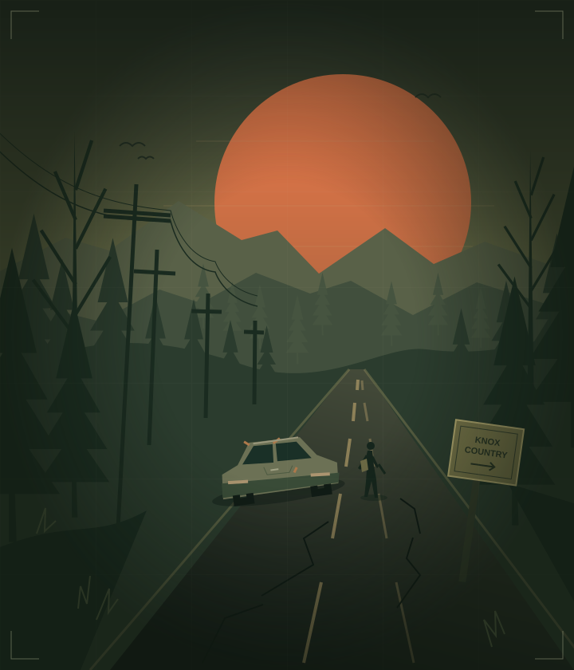

A PROJECT ZOMBOID SERVER
THE WORLD
ENDED.
YOU'RE STILL
HERE.
One more supply run. One more close call.
One more story worth surviving for.
YOUR WAY IN
pz.12washere.pro:7449
EXCLUSION ZONE
NO RESCUE
COMING.MAKE YOUR OWN WAY.
COMING.MAKE YOUR OWN WAY.
FIELD NOTES / 001KEEP MOVING ↗
YOUR FIRST SUPPLY RUN
Getting in is the easy part.
Three steps between you
and your next bad decision.
- 01 /
Boot up.
Open Project Zomboid on your PC. From the main menu, select Join.
- 02 /
Find your way.
Add pz.12washere.pro as the IP and 7449 as the port. Save it to your favorites.
- 03 /
Make a little history.
Enter your player credentials and any required server password, then connect. Your story starts there.
✳ SERVER STATUS
Online players.
Checking server…
YOUR NEXT CHAPTER
We saved you
a spot in the apocalypse.
Bring a plan. Bring a friend.
Maybe bring a spare bandage.
CONNECTION DETAILS PZ / MP
- SERVER ADDRESS
pz.12washere.pro- PORT
7449
Connect from the game's Join menu.